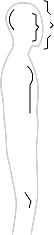

Nedanstående är en ännu ofärdig anpassning
av ASLWrite till svenskt teckenspråk. Du är
varmt välkommen att använda dig av de delar som finns. Idéer,
åsikter och erfarenheter av skrivet teckenspråk mottages tacksamt
på <sslwrite@klingonska.org>.
Den här sidan är tänkt att vara en kort och lättbegriplig introduktion
till teckenskrift – en skrift för svenskt teckenspråk. (Det finns
en detaljerad lista över symbolerna på engelska
för den som är nyfiken.)
Denna skrift (också känd som SSLWrite) är baserad
på ASLWrite (för amerikanskt teckenspråk)
som i sin tur skapats av Adrean Clark, Jules Dameron, Robert Arnold och många
andra. Den här sidan är till stora delar en översättning och bearbetning av
Adrean
Clarks How to
Write American Sign Language med många anpassningar gjorda för
svenskt teckenspråk.
Vem är då jag? Jag heter zrajm, och jag är
en (hörande) student av svenskt teckenspråk (vid Stockholms universitet).
Teckenskriften som jag beskriver på den här sidan föddes ur min önskan att
kunna anteckna och läsa direkt på teckenspråk utan att behöva gå omvägen över
svenska.
P.S. För att undvika förvirring i den här texten så använder jag ordet
’tecken’ enbart för att referera till tecken i teckenspråket. När jag talar
om skrivna krumelurer kallar jag dem istället ’markör’, ‘symbol’ etc.
handalfabetet
Så här ser handalfabetet ut (om du tecknar med höger hand – använder du
vänster blir alla symboler spegelvända).
ABCDEFGHIJKLMNOPQRSTUVWXYZÅÄÖ
handsymboler
De olika handformerna betecknas av handsymboler. Här följer en lista av
handsymboler, deras handform och det namn som används
av Svenskt
Teckenspråkslexikon.
Ovanliga handformer (finns med som ’varianter’ i
bokformen av svenskt teckenspråkslexikon) är
ljusare. Svenska symboler är blåa (de finns inte i
ASLWrite, men är byggda på samma principer) – ingen av symbolerna här är
satta i sten (än) och förslag mottages tacksamt!
öppna handformer
sprethand
vinklad sprethand (variant)
klohand
4-hand
böjd 4-hand (variant)
W-hand
böjd W-hand (variant)
S-hand
S-hand (variant)
vinkelhand
vinkelhand (variant)
flat hand
D-hand
flat tumhand
stor nyphand
stor nyphand (variant)
stor nyphand (variant)
stor nyphand (variant)
stort långfinger
stort långfinger (variant)
runt långfinger
runt långfinger (variant)
F-hand
slutna handformer
knuten hand
knuten hand (variant)
E-hand
tumvinkelhand
A-hand
O-hand
tumhand
tumhand (variant)
Q-hand
hållhand
blandade handformer
nyphand
nyphand (variant)
rak måtthand
måtthand
måtthand (variant)
krokfinger
L-hand
pekfinger
pekfinger (variant)
vinklat pekfinger (variant)
T-hand
T-hand (variant)
långfinger
V-hand
?
V-hand (variant)
dubbelkrok
K-hand
X-hand
flyghand
U-hand
lillfinger
?
lillfinger (variant)
N-hand
N-hand (variant)
N-hand (variant)
N-hand (variant)
M-hand
liten tumvinkelhand
liten O-hand
liten O-hand (variant)
tupphand
vinklad tupphand (variant)
tupphand (variant)
böjd tupphand
rörelsesymboler
kontaktpunkter
rörelselinjer
Slutpunkt (med och utan upprepningar)
Tvärslutpunkt
byte av handform
Vertikalmarkör
Förändringslinjer ser ut som vanliga rörelselinjer,
men beskriver att en handform förändras utan förflyttning. Vanligtvis
används förändringslinjen som understrykning till handformerna ifråga. Vill
man vara extra tydligt kan man använda en fixpunkt för
att ’spika fast’ rörelselinjen.
’Ja’ (utan fixpunkt)
’Ja’ (med fixpunkt)
Två händer
Följande symboler visar hur två händer rör sig i förhållande till
varandra.
Krympande linjer
Växande linjer
Turmarkör
Kretsmarkör
Rattmarkör
Vevmarkör
Flätmarkören () används för att beskriva att fingrarna flätas
samman/korsas.
Neutrala läget – Ett tecken utan lägessymbol utförs i
det neutrala läget. Det betyder att tecknet utförs horisontellt, dvs att en
rörelse uppåt på pappret motsvarar en rörelse framåt i verkligheten, och
att handflatorna är vända antingen uppåt eller nedåt. (För att bryta mot
denna horisontalitet kan man använda vertikal-
och kantmarkörer.)
Kroppsläget har två olika perspektiv: framåt
och från sidan.

Framåt
Från sidan
Lägessymboler (höger hand). Symbolerna spegelvänds när
tecknandet sker med vänster hand. Halsen har två streck,
medan de andra lägessymbolerna bara har ett.
Framåt – När perspektivet är framåt används
rörelselinjer precis som i neutrala läget, bortsett ifrån att
vertikalmarkörer inte behövs. Tecknet skrivs från den tecknande personens
egna synvinkel (dvs högerhanden skrivs till höger, vänsterhanden till
vänster, precis som för neutrala läget).
Från sidan – Om ett tecken har en rörelse framåt (ut från
kroppen) så skrivs tecknet med en av lägessymbolerna från sidan
(istället för ur tecknarens eget perspektiv).
Meningsslut – För att markera slutet på en mening (i ett
längre sammanhang) används en liten cirkel. I kortare sammanhang (enskilda
fraser tex) är det ofta tydligt var meningen slutar och meningsslutet kan
utelämnas.


 ) används för att beskriva att fingrarna flätas
samman/korsas.
) används för att beskriva att fingrarna flätas
samman/korsas.